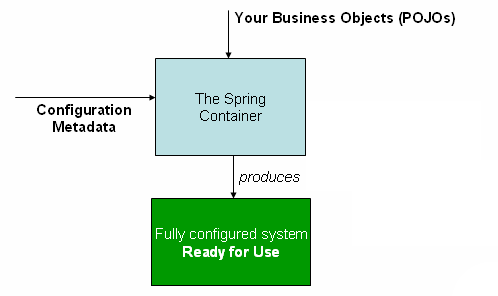

El conteneder de Spring
Bill of materials
Si estás usando Maven para la administración de dependencias no necesitas proveerlas de forma explícita. Por ejemplo, para crear una aplicación con Spring usando sólo inyección de dependencias la dependencia de Maven que necesitas es:
El ejemplo anterior trabaja con el repo Central de Maven. Pero para garantizar la entrega de las dependencias podemos usar alguno de los repositorios de Spring, sólo necesitamos agregarlos a nuestra configuración.
pom.xml - RELEASES
pom.xml - MILESTONES
pom.xml - SNAPSHOTS
Es posible accidentalmente mezclar diferentes versiones de los JAR’s de Spring cuando se usa Maven. Por ejemplo, podrás encontrar librerías de terceros que usan versiones específicas de Spring, o incluso algún subproyecto de Spring usa ciertas versiones del framework, jalando por lo tanto versiones anteriores por Dependencias Transitivas.
Para solucionar el problema, Maven soporta el concepto de “Bill of materials”. Puedes importar la dependencia spring-framework-bom en la section de dependencyManagement para asegurarse que las dependencias de Spring(directas y transitivas) son de la misma versión.
Administración de dependencias con Gradle
Para usar los repositorios de Spring con Gradle incluye las URL’s apropiadas en la sección de repositorios, y agrega las dependencias a tu gusto:
BeanFactory y AppCtx
En Spring los objetos que forman la columna vertebral de tu aplicación y que son manejados por el contenedor de IoC son llamados beans.
Spring provee dos tipos de implementación del contenedor de IoC. La básica es llamada bean factory, la más avanzada es llamada application context, el cual es una extensión compatible con el bean factory. Y la configuración para estos dos tipos de contenedores es idéntica. El AppCtx provee funcionalidades más avanzadas pero se mantiene simple de usar. Es más recomemdable usar el AppCtx para cada aplicación a menos que los recursos de esta sean restringidos, como cuando corremos un appleto o un dispositvo móvil. Dichos contenedores están declarados en las siguientes interfaces:
En donde, como se puede ver el AppCtx es un subtipo de BeanFactory, y mas interesante es, ver los tipos de ApplicationContext con los que contamos para crear una aplicación, entre ellos podemos nombrar de forma destacada:
- AnnotationConfigApplicationContext
- AnnotationConfigWebApplicationContext
- ClassPathXmlApplicationContext
- FileSystemXmlApplicationContext
- GenericGroovyApplicationContext
- GenericWebApplicationContext
- GenericXmlApplicationContext
- XmlWebApplicationContext
Adicionalmente, es bueno mencionar que los paquetes org.springframework.beans y org.springframework.context son la base del contenedor de Spring.
Diferencias entre el BeanFactory y el AppCtx
El BeanFactory proporciona la base fundamental para la funcionalidad del contenedor de IoC de Spring pero sólo se usa directamente en la integración con otros frameworks de terceros, y ahora es en gran parte de naturaleza histórica para la mayoría de los usuarios de Spring. Sin embargo la regla es: Usa un ApplicationContext a menos que tengas una buena razón para no hacerlo.
El ApplicationContext agrega la integración con características de AOP, manejo de recursos, publicación de eventos y contextos específicos en función del tipo de aplicación.
- Un BeanFactory
- Instancia y alambra los beans
- Un ApplicationContext
- Instancia y alambra los beans
- Hace un registro automático con
BeanPostProcessor
- Hace un registro automático del
BeanFactoryPostProcessor
- Habilita el acceso conveniente al
MessageSource
- Hace la publicación del
ApplicationEvent
Archivo base de configuración: appctx.xml
Inyección de Dependencias entre beans con elementos transversales.
El contenedor de beans de Spring

Componentes funcionales y no funcionales

Cross cutting concerns
Ciclo de vida de los beans
Un bean es un objeto que es instanciado, ensamblado, y de alguna manera administrado por el contenedor de Spring.
En una aplicación basada en Spring, los objetos de la aplicación vivirán dentro del contenedor de IoC, este último los creará y ellos se alambrarán, se configurarán y el mismo contenedor los administrará.

El contenedor es la parte central de SpringFramework, el cual, usa inyección de dependencias para administrar los componentes de la aplicación. Esto incluye la creación de asociaciones entre componentes colaboradores.
En una aplicación Java tradicional el ciclo de vida de un bean es simple, la palabra reservada new es usada para instanciarlo y con eso esta listo para usarse. Una vez que ya no se usa más, entonces es candidato para que el Garbage Collector pase por él. En contraste, el ciclo de vida de un bean dentro del contenedor de Spring es más elaborado. Como se pudo apreciar anteriormente, el BeanFactory ejecuta varias pasos antes de enlistar un bean, y sumado con lo que hace el ApplicationContext podemos enlistar las siguientes:
- Spring instancia el bean
- Spring inyecta valores y referencias de beans en sus propiedades.
- Si el bean implementa
BeanNameAware, Spring pasa el ID del bean al método setBeanName().
- Si el bean implementa
BeanFactoryAware, Spring llama al método setBeanFactory(), pasando el bean a dicho factory.
- Si el bean implementa
ApplicationContextAware, Spring llama el método setApplicationContext(), pasando la referencia a dicho AppCtx dentro del bean.
- Si cualquiera de los beans implementa la interface
BeanPostProcessor, Spring llama a su método postProcessBeforeInitialization().
- Si cualquiera de los beans implementa la interfaz
InitializingBean, Spring llama a su método agterPropertiesSet(). Similarmente, si el bean fue declarado con un init-method, entonces dicho método es llamado.
- Si existen beans que implementan
BeanPostProcessor, Soring llmará a su método postProcessAfterInitialization().
- En este punto, el bean esta listo para ser usado por la aplicación y permanecerá en el contexto de la aplicación hasta que dicho contexto sea destruido.
- Si cualquier bean implementa la interfaz
DisposableBean, entonces Spring llamará a su método destroy(). De otra forma, si cualquier bean fue declarado con un destroy-method, entonces dicho método será llamado.
Caso de estudio
Nuestro ejemplo estará basado en un tablero de tareas(Taskboard), el cual esta asignado a algun proyecto que a su vez tiene varias historias de usuario, dichas historias serán pobladas por las tareas. Todo este conjunto nos dará como resultado un tablero que potencialmente podrá ser visualizado en un front-end.
Creación de proyectos
Como product owner
Deseo administrar proyectos
De tal manera que pueda crearlos y visualizarlos
Criterios de aceptación:
- El proyecto debe tener un identificador único
- El identificador de proyecto de estar en mayúsculas y sin espacios
- Debe de tener una descripción
- Esta formado de varias historias de usuario
- Se deberá calcular el esfuerzo total del proyecto
Agregar historias de usuario
Como product owner
Deseo agregar la descripción de una funcionalidad
De tal manera que pueda identificarla como una historia de usuario
Criterios de aceptación:
- Debe de tener el esfuerzo necesario en puntos
- Debe tener una prioridad
- Dos historias de usuario no pueden tener la misma prioridad
- Debe tener una descripción
- Es posible asignarle varias tareas
- Cuando todas sus tareas están terminadas entonces se considera hecho
- Se puede repriorizar una historia de usuario.
Crear tareas
Como miembro del equipo
Deseo agregar tareas
De tal manera que puedan ser parte de una historia de usuario
Criterios de aceptación:
- Las tareas pueden tener tres estados: TODO, WIP y DONE
- Una tarea puede estar asignada a varios usuarios
- Tienen una descripción
- Pueden cambiar de estado
- Un usuario sólo puede tener una tarea en WIP
- Cuando se crea una tarea debe de tener el estado TODO.
- Sólo se pueden asignar tareas a usuarios dentro del proyecto.
Agregar miembros al equipo
Como miembro del equipo
Deseo unirme al equipo
De tal manera que agregar tareas y colaborar en un proyecto
Criterios de aceptación:
- Los nombres de usuario deben ser únicos
- El nombre de usuario debe tener la forma de un correo
Visualizar un tablero de tareas
Como miembro del equipo
Deseo un tablero con las tareas de una proyecto
De tal manera que pueda visualizar el estado actual del proyecto
Criterios de aceptación:
- Debe de tener 3 líneas
- Las tareas deben mostrar el nombre de los participantes
Tu propia historia...
Como un usuario
Deseo hacer algo
De tal manera que me aporte valor
Criterios de aceptación:
- Satisfacción
- Validación
- Restricción
Estructura de las clases de dominio
Project.java
UserStory.java
Task.java
TaskStatus.java
User.java
Funcionalidad que deseamos implementar a nivel de interfaces
ProjectService.java
UserStoryService.java
TaskService.java
UserService.java
Información de utilidad
Aunque esta es la funcionalidad de negocio que deseamos implementar, debes recordar que aún necesitarás otros componentes que te permitan almacenar los datos de la estructura; tales componentes podrían implementarse con acceso a datos(relacionales o no relacionales) y sus respectivas abstracciones.